"Đầu chủ hoàn tác một lần sửa hay một lô mà máy không ghi được: thông báo nói đúng căn nào chưa trả về và vì sao, lần hoàn tác chưa xong vẫn bấm lại được, lỗi bất ngờ sau khi ô sửa đã đóng hiện thông báo thay vì im lặng"
Vì sao làm
Chủ kho chọn «mở hợp đồng mới» ở Cổng Bằng chứng hàng 16 (Ngoài-3: hoàn tác lô báo thành công dù vài căn chưa ghi); gộp cùng giới hạn đã ghi ở va-sua-tren-o (Ngoài-1: hoàn tác hỏng vẫn đánh dấu đã hoàn tác; Ngoài-3: lỗi bất ngờ sau khi ô sửa đóng thì im lặng) vì cùng đường lỗi
Đã hứa
- AC-1 — Given một lô 5 căn đã đổi trạng thái, When Đầu chủ bấm «Hoàn tác» mà kho trên máy không ghi được 2 trong 5 lệnh
- AC-2 — Given thông báo ở AC-1, When Đầu chủ bấm «Hoàn tác» trên thông báo ấy sau khi kho ghi lại được, Then đúng hai căn
- AC-3 — Given một lần sửa giá hay trạng thái trên ô có thông báo «Hoàn tác», When lệnh bù không ghi được, Then thông báo
- AC-4 — Given bốn chỗ ghi sau khi ô sửa đã đóng — lưu trên ô, hoàn tác trên ô, ghi lô, hoàn tác lô — When lần ghi ném lỗi
- AC-5 — Given lô và lần sửa trên ô ghi được trọn, When hoàn tác, Then thông báo và hành vi như trước hàng này (thành công
- AC-6 — Given Bảng hàng trên máy tính 1440, When tiêm lỗi ghi kho trên máy cho 2 trong 5 căn của một lô rồi hoàn tác và bấm
- AC-7 — Given cây sau hàng này, When chạy kiểm kiểu, lint (luật `quy-hang-ui`, mức nợ 0, kiểm chuẩn), quét khuôn và sàn
Thiết kế
docs/superpowers/specs/2026-11-04-va-duong-loi-hoan-tac-design.md
Quyết định
- 2026-11-04 · Máy · approach · S1 — Đã tra tri thức: 88Kho đã khai tri_thuc — bước thiết kế tra trang trước khi chọn.
- 2026-11-04 · Máy · approach · S1 — Hoàn tác lô có căn hỏng: thông báo lỗi «Chưa hoàn tác được k căn» kể mã căn và lý do từng căn, kèm số căn đã về; nút «Hoàn tác» trên thông báo ấy trỏ một bản ghi lô mới chỉ gồm căn hỏng.Câu giao của hàng 88 đòi nói đúng căn nào chưa trả về, vì sao, và bấm lại được; bản ghi chỉ gồm căn hỏng giữ luật một lệnh bù mỗi căn của hàng 16.
- 2026-11-04 · Máy · approach · S1 — Hoàn tác trên ô chỉ tính «đã dùng» khi lệnh bù ghi được: lệnh bù hỏng thì bộ giữ bản ghi trả bản ghi lại (nút trên thông báo lỗi và Ctrl/Cmd+Z thử lại đúng lần sửa ấy).Known limits Ngoài-1 của va-sua-tren-o ghi đúng lỗi này và hàng 88 mở để gỡ nó; câu giao đòi lần hoàn tác chưa xong vẫn bấm lại được.
- 2026-11-04 · Máy · approach · S1 — Bốn chỗ ghi sau khi ô sửa đóng (lưu ô, hoàn tác ô, ghi lô, hoàn tác lô) đi qua một hàm bọc biến lỗi ném ra thành lỗi có tên «Lỗi bất ngờ — chưa lưu được, thử lại» và hiện thông báo; không đổi bộ đồng bộ.Known limits Ngoài-3 của va-sua-tren-o: lỗi bất ngờ thì ô sửa đã đóng và không có thông báo; sua() của bộ đồng bộ ném lại mọi lỗi không phải LoiKho, và bốn lời gọi đều qua void.
- 2026-11-04 · Máy · approach · S1 — Thông báo lỗi lô liệt tối đa năm mã căn, phần còn lại «và n căn khác».Thông báo nổi của sonner không cuộn; lô đổi trạng thái có thể vài chục căn.
- 2026-11-04 · Máy · descope · S1 — bỏ design-pass — hàng chỉ đổi chữ và nút của thông báo sonner đang có, không màn, khối hay bố cục mớiĐặc tả UX ở design doc: một component dùng nguyên (sonner); E6, E7 chụp thông báo trên bản đang chạy ở S4.
- 2026-11-04 · Máy · descope · S1 — KHÔNG gửi lỗi bất ngờ về máy chủ hay gom thông báo lỗi nhiều lô vào một chỗ xem lại — để hàng sau.Câu giao chỉ đòi hiện thông báo thay vì im lặng; ghi nhật ký về máy chủ chạm API và bộ đồng bộ ngoài vùng của hàng.
- 2026-11-04 · Máy · approach · S1 — Hoàn tác lô có căn hỏng theo nếp ghi lô một phần của hàng 16: thông báo trung tính «Đã hoàn tác n căn · k căn chưa hoàn tác được», mô tả kể mã căn và lý do; nút «Hoàn tác» trỏ bản ghi lô mới chỉ gồm căn hỏng vì kho hay lỗi bất ngờ (lỗi luật của lõi kể vào «không hoàn tác được»).Gap-probe P0: loại thông báo là nghĩa người dùng thấy — đã có câu chủ kho duyệt ở AC-6 của sua-hang-loat cho chính ca ghi lô một phần, nên theo đúng nếp ấy thay vì chọn mới.
- 2026-11-04 · Máy · approach · S1 — Căn chưa hoàn tác được tích lại trên lưới; thông báo liệt tối đa năm mã, phần còn lại «và n căn khác».Gap-probe P0: lô lớn thì danh sách trong thông báo không đủ — nếp của hàng 16 (căn không đổi được vẫn tích) cho người thấy đủ mọi căn chưa về trên lưới, trần năm mã chỉ giới hạn chữ của thông báo.
- 2026-11-04 · Người · seal · gate1 —
- 2026-11-04 · Máy · fix · S4-r1 — Sửa thước E6: Ctrl/Cmd+Z sau lần hoàn tác đã thành công không làm gì (không thông báo, giá không đổi) — không phải «Đã hoàn tác rồi»; sản phẩm giữ nguyên.E6 lượt 1 FAIL ở hai vế Ctrl+Z thêm một lần: sản phẩm làm đúng luật đã ký ở AC-6 của va-sua-tren-o («bản ghi ấy đã dùng thì Ctrl+Z không làm gì»); vế ấy do gap-probe P1 đòi ghim quá tay khi soạn evals, AC-3 chỉ nói «lần bấm sau» của nút.
- 2026-11-04 · Máy · fix · S4-r1 — Tách dữ liệu của E6 và E7: E6 chỉ dùng phiên dau-chu-1 trên A-04.06, B-09.01; E7 chỉ dùng phiên dau-chu-2 trên căn Toà B; không dựng lại dữ liệu bằng lời gọi API thẳng giữa các bước; DỰNG B lại trước lượt 2.E7 lượt 1 FAIL vì 1–2 căn của lô không đổi: hai tác tử chấm chạy song song cùng phiên dau-chu-2 trên cùng căn (A-13.01, A-02.01 có ở cả E6 và E7) và E7 tự POST đưa căn về giữa các lần — phiên bản trên máy cũ, 409, căn vào «Cần xem». Bài kiểm kho chậm với gửi nền chen giữa lô (dong-bo) chạy xanh trên mã hiện tại: không có lỗi mất ghi ở bộ đồng bộ.
- 2026-11-04 · Máy · fix · S4-r1 — Lượt chấm 2 chạy trên HEAD mới (--nhan-cay-moi): commit 7ef0e91b là bản sửa thước E6 và tách dữ liệu E6/E7 có chủ đích của phiên dãy B sau REJECT lượt 1, không phải tác tử chấm ghi vào cây; mã sản phẩm không đổi.s4-args báo «cay doi chua hoan lai» vì sổ chạy lượt 1 ghi cùng commit với bản sửa thước.
Bằng chứng
Các eval
| Eval | Tiêu chí | Loại | Verdict | run_id | verified_at |
|---|---|---|---|---|---|
| E1 | AC-1 | test | PASS (CARRY-FORWARD TU ROUND 1) | minted-va-duong-loi-hoan-tac-E1-r1 | 2026-11-04T02:49:48Z |
| E2 | AC-2 | test | PASS (CARRY-FORWARD TU ROUND 1) | minted-va-duong-loi-hoan-tac-E2-r1 | 2026-11-04T02:49:48Z |
| E3 | AC-3 | test | PASS (CARRY-FORWARD TU ROUND 1) | minted-va-duong-loi-hoan-tac-E3-r1 | 2026-11-04T02:49:48Z |
| E4 | AC-4 | test | PASS (CARRY-FORWARD TU ROUND 1) | minted-va-duong-loi-hoan-tac-E4-r1 | 2026-11-04T02:49:48Z |
| E5 | AC-5 | test | PASS (CARRY-FORWARD TU ROUND 1) | minted-va-duong-loi-hoan-tac-E5-r1 | 2026-11-04T02:49:48Z |
| E6 | AC-3 | ui-check | FAIL | minted-va-duong-loi-hoan-tac-E6-r2 | — |
| E7 | AC-6 | ui-check | FAIL | minted-va-duong-loi-hoan-tac-E7-r2 | — |
| E8 | AC-7 | script | PASS (CARRY-FORWARD TU ROUND 1) | minted-va-duong-loi-hoan-tac-E8-r1 | 2026-11-04T02:49:48Z |
| E9 | AC-7 | script | PASS (CARRY-FORWARD TU ROUND 1) | minted-va-duong-loi-hoan-tac-E9-r1 | 2026-11-04T02:49:48Z |
| E10 | AC-7 | script | PASS (CARRY-FORWARD TU ROUND 1) | minted-va-duong-loi-hoan-tac-E10-r1 | 2026-11-04T02:49:48Z |
| E11 | AC-7 | script | PASS (CARRY-FORWARD TU ROUND 1) | minted-va-duong-loi-hoan-tac-E11-r1 | 2026-11-04T02:49:48Z |
Chi tiết từng eval
PASS (CARRY-FORWARD TU ROUND 1) E1 · test
AC-1: Given một lô 5 căn đã đổi trạng thái, When Đầu chủ bấm «Hoàn tác» mà kho trên máy không ghi được 2 trong 5 lệnh
PASS (CARRY-FORWARD TU ROUND 1) E2 · test
AC-2: Given thông báo ở AC-1, When Đầu chủ bấm «Hoàn tác» trên thông báo ấy sau khi kho ghi lại được, Then đúng hai căn
PASS (CARRY-FORWARD TU ROUND 1) E3 · test
AC-3: Given một lần sửa giá hay trạng thái trên ô có thông báo «Hoàn tác», When lệnh bù không ghi được, Then thông báo
PASS (CARRY-FORWARD TU ROUND 1) E4 · test
AC-4: Given bốn chỗ ghi sau khi ô sửa đã đóng — lưu trên ô, hoàn tác trên ô, ghi lô, hoàn tác lô — When lần ghi ném lỗi
PASS (CARRY-FORWARD TU ROUND 1) E5 · test
AC-5: Given lô và lần sửa trên ô ghi được trọn, When hoàn tác, Then thông báo và hành vi như trước hàng này (thành công
FAIL E6 · ui-check
AC-3: Given một lần sửa giá hay trạng thái trên ô có thông báo «Hoàn tác», When lệnh bù không ghi được, Then thông báo
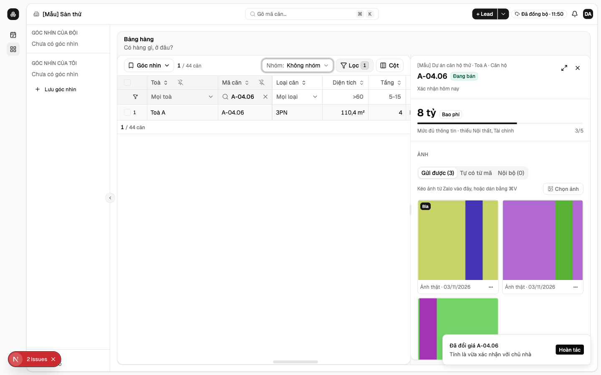
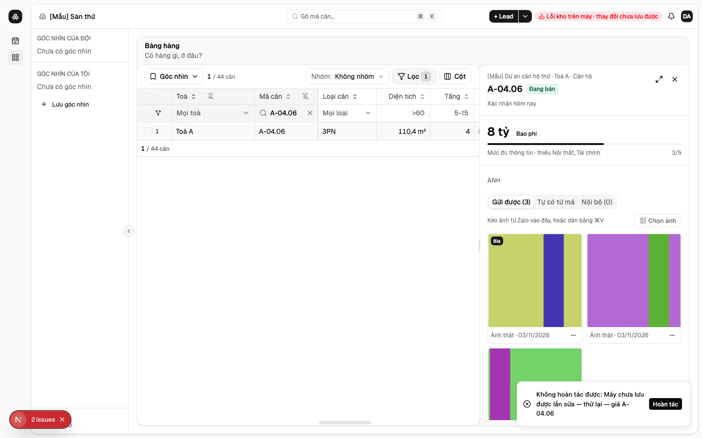
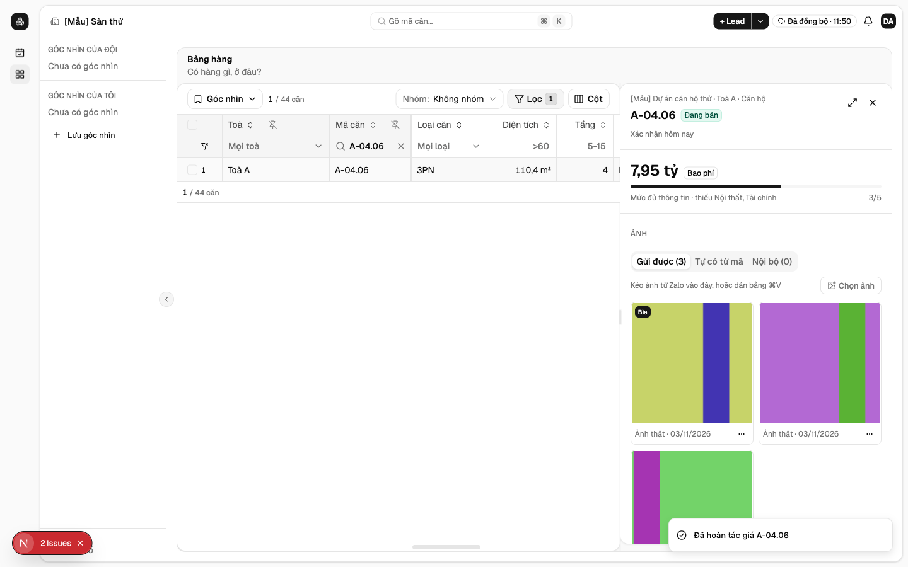
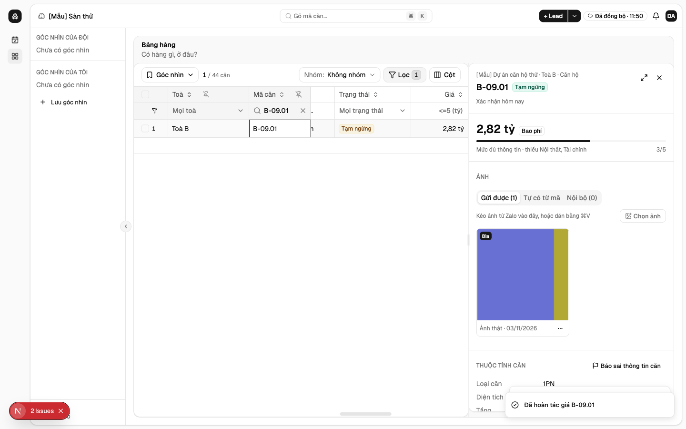
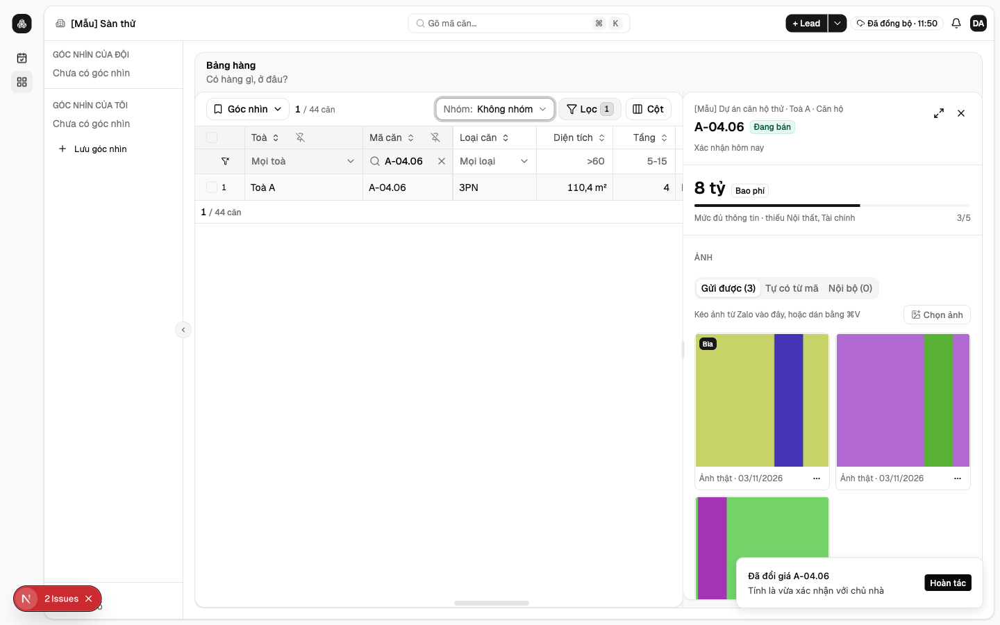

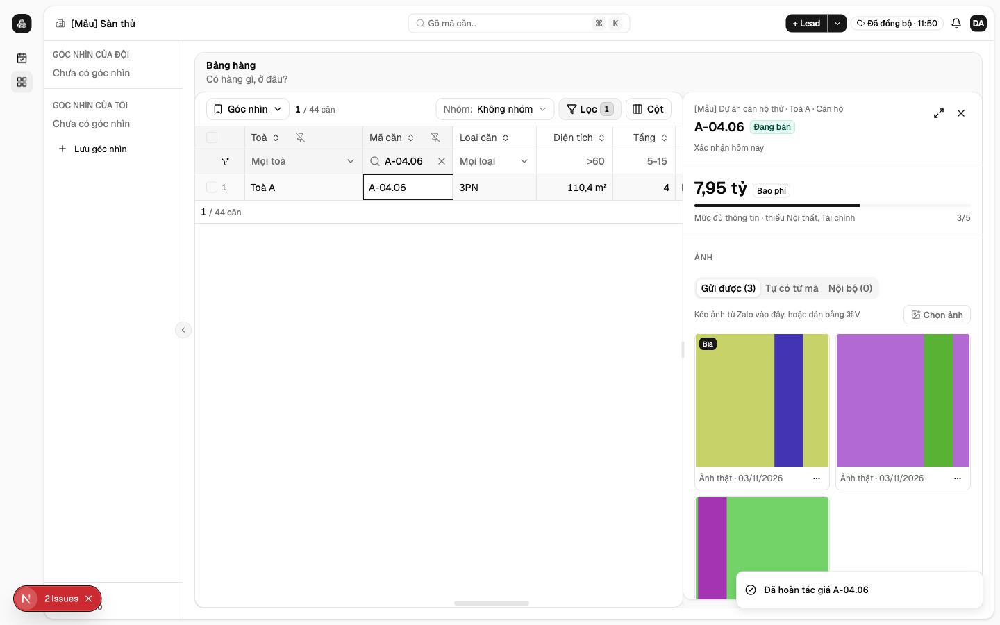
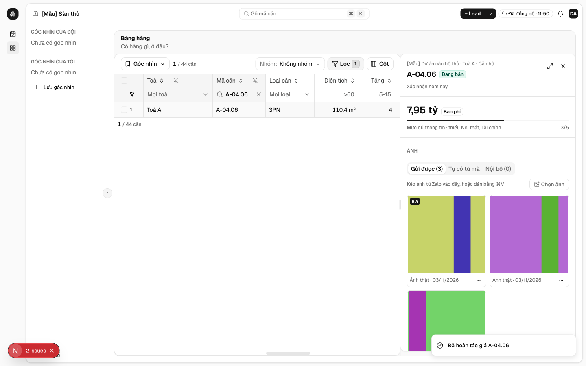
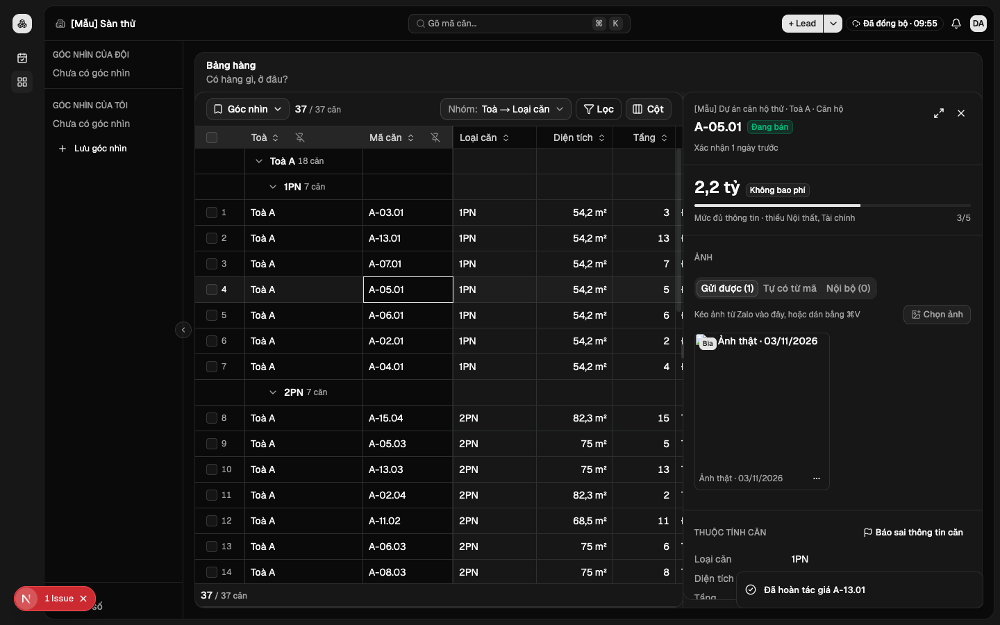

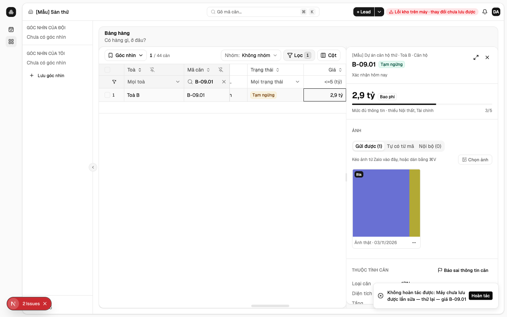
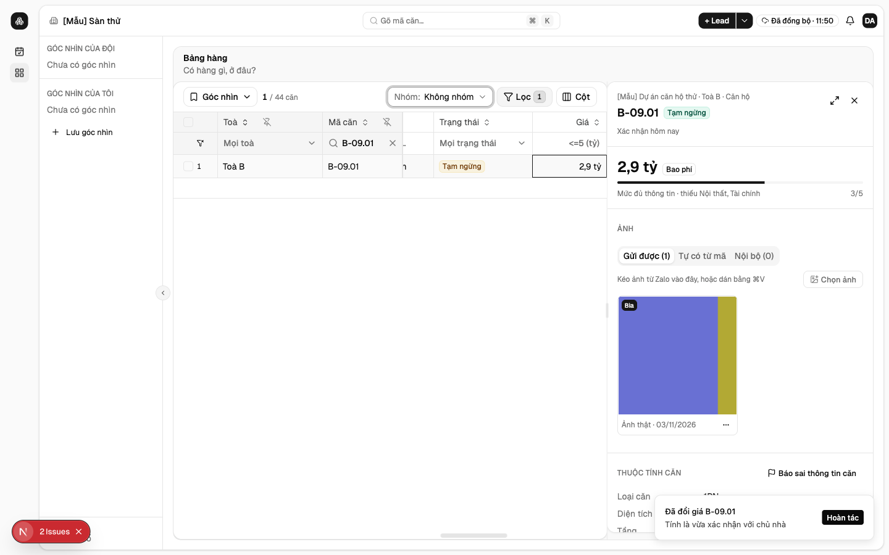
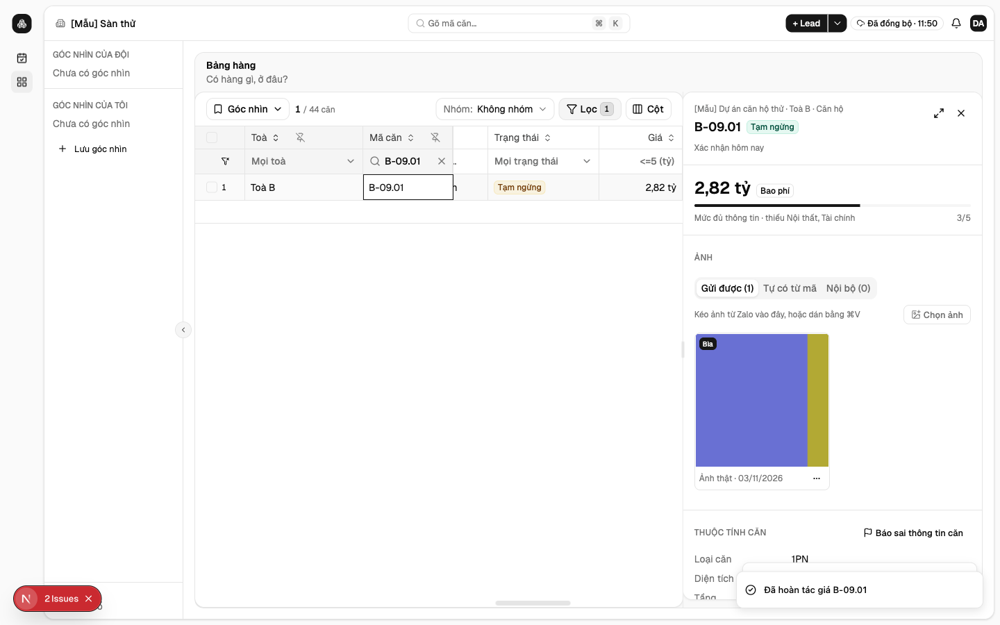
Hanh vi giao dien khop expected o ca hai luot (a) va (b): hong -> toast loi co nut Hoan tac -> bam lai bang nut hoac Ctrl+Z -> gia ve gia cu -> Ctrl+Z them mot lan sau khi toast het khong lam gi. Luu y: toast loi co them duoi « — gia A-04.06» / « — gia B-09.01» (expected khong co duoi nay). Eval FAIL theo luat network: E6-network.txt co mot request app-origin toi events cua can 144ac851 (khong phai A-04.06/B-09.01) bi tu choi, va console co loi tren events cua 4 can khac; nhieu kha nang tu hang doi ngoai tuyen ton tu cac lan chay truoc trong cung profile trinh duyet. Cac request ghi cua hai can cua eval deu thanh cong. Expected khong khai loi app-origin nao nen eval FAIL du UI khop. Moi truong: Playwright, 1440x900, phien san co (avatar DA = dau-chu-1), server 3492 co san. Da chay 2 lan toan chuoi; frame hop le la lan 2. Ngoai ra co loi hydration va canh bao Base UI nativeButton (khong phai network).
FAIL E7 · ui-check
AC-6: Given Bảng hàng trên máy tính 1440, When tiêm lỗi ghi kho trên máy cho 2 trong 5 căn của một lô rồi hoàn tác và bấm
Assertion 1 (dựng 5 căn Toà B Đang bán, đổi lô sang Tạm ngưng, toast có Hoàn tác): CHỈ ĐẠT MỘT PHẦN — toast «Đã đổi trạng thái 5 căn» có nút Hoàn tác, nhưng B-13.02 không đổi (vẫn Đang bán, Active v4). Có một xung đột ghi ở events của B-03.04 trong lúc hoàn tác. Assertion 2 (tiêm lỗi, Hoàn tác một phần): không đạt — tiêu đề thực tế «Đã hoàn tác 2 căn · 2 căn chưa hoàn tác được · 1 căn đã có lần sửa sau — bỏ qua», Expected «Đã hoàn tác 3 căn · 2 căn chưa hoàn tác được». Hai mã kể (B-14.04, B-08.02 = căn 2 và 4 theo thứ tự lưới) ĐÚNG, kèm lý do, có nút Hoàn tác: đạt. Assertion 3 (bấm lại → «Đã hoàn tác 2 căn», 5 căn về Đang bán): không đạt/không chạy được — toast hết hạn tự tắt trước lần bấm, không có bằng chứng lần hai; trạng thái cuối B-14.04, B-08.02 vẫn Tạm ngưng. Network: app-scope có lỗi ghi không khai trong expected (B-03.04 từ E7; B-09.01 và 144ac851 từ E6 chạy song song; thêm bốn lỗi từ E6) nên eval đủ điều kiện FAIL. Chi tiết số trạng thái nằm ở evidence/E7-network.txt. Ghi chú: thứ tự «căn thứ hai/tư» lấy theo thứ tự tích trên lưới (B-03.04, B-14.04, B-13.02, B-08.02, B-15.05). Dữ liệu Toà B hiện ở trạng thái dở (cần dựng lại nếu chạy lại). Frame đã lưu trong evidence/: E7-step0.png, E7-step1a.png, E7-step1b.png, E7-step1c.png, E7-step1d.png, E7-lo.png, E7-mot-phan.png, E7-lai.png; network: E7-network.txt.
PASS (CARRY-FORWARD TU ROUND 1) E8 · script
AC-7: Given cây sau hàng này, When chạy kiểm kiểu, lint (luật `quy-hang-ui`, mức nợ 0, kiểm chuẩn), quét khuôn và sàn
PASS (CARRY-FORWARD TU ROUND 1) E9 · script
AC-7: Given cây sau hàng này, When chạy kiểm kiểu, lint (luật `quy-hang-ui`, mức nợ 0, kiểm chuẩn), quét khuôn và sàn
PASS (CARRY-FORWARD TU ROUND 1) E10 · script
AC-7: Given cây sau hàng này, When chạy kiểm kiểu, lint (luật `quy-hang-ui`, mức nợ 0, kiểm chuẩn), quét khuôn và sàn
PASS (CARRY-FORWARD TU ROUND 1) E11 · script
AC-7: Given cây sau hàng này, When chạy kiểm kiểu, lint (luật `quy-hang-ui`, mức nợ 0, kiểm chuẩn), quét khuôn và sàn
Vòng verify
- Round 1: E6, E7 failed — bai cham giao dien E6/E7 khong dat; chay lai sau khi sua thuoc E6 va tach du lieu E6/E7. Returned to implementation.
- Round 2: E6, E7 failed — E6: giao dien khop expected nhung co loi ghi app-origin ngoai hai can cua eval nen FAIL theo luat network; E7: lo chua du 5 can Tam ngung khi dung (B-13.02 khong doi), tieu de hoan tac mot phan lech expected, lan bam thu hai khong chay duoc. Returned to implementation.
Tài nguyên
| Khối | Tác tử | Token đầu ra |
|---|
0 lượt chấm · tổng 0 token
Giới hạn và ngoài hợp đồng
- Đổi cách bộ đồng bộ gửi lên máy chủ hay xử lý «Cần xem».
- Hoàn tác «đã gọi» (vẫn không đảo được).
- Màn danh sách lỗi riêng; thông báo liệt tối đa năm mã căn.
Giao
chưa ghi quan sát production
Giá trị
- Câu hỏi phép đo trả lời: [đề xuất] đã đạt «Tiêm lỗi ghi ở kho trên máy cho 2 trong 5 căn của một lô rồi hoàn tác: thông báo kể đúng 2 căn chưa trả về, bấm lại hoàn tác được 2 căn ấy; lỗi bất ngờ sau khi ô sửa đóng hiện thông báo; hoàn tác thành công không đổi hành vi» chưa? — chưa đo
- Kết quả nào là SỐNG: [đề xuất] Tiêm lỗi ghi ở kho trên máy cho 2 trong 5 căn của một lô rồi hoàn tác: thông báo kể đúng 2 căn chưa trả về, bấm lại hoàn tác được 2 căn ấy; lỗi bất ngờ sau khi ô sửa đóng hiện thông báo; hoàn tác thành công không đổi hành vi — chưa đo
- Kết quả nào là CHẾT: [đề xuất] chưa đạt «Tiêm lỗi ghi ở kho trên máy cho 2 trong 5 căn của một lô rồi hoàn tác: thông báo kể đúng 2 căn chưa trả về, bấm lại hoàn tác được 2 căn ấy; lỗi bất ngờ sau khi ô sửa đóng hiện thông báo; hoàn tác thành công không đổi hành vi» khi hết timebox — chưa đo
- Timebox: … — chưa đo